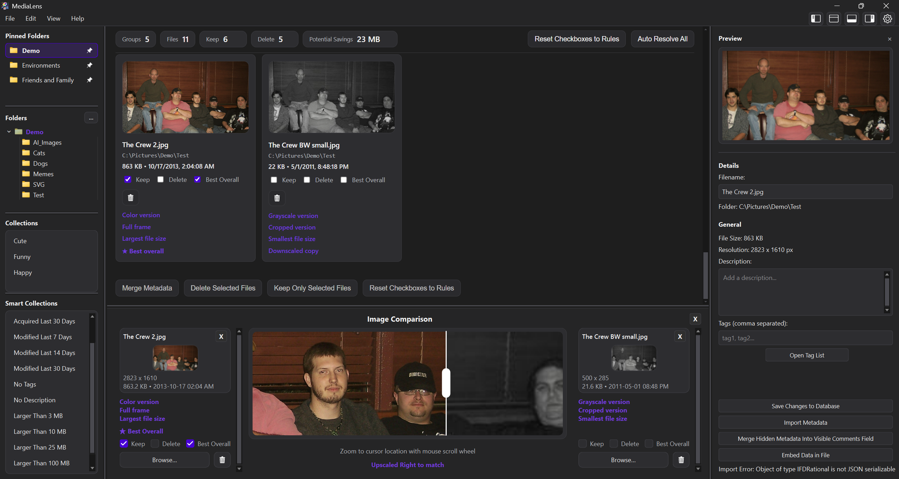
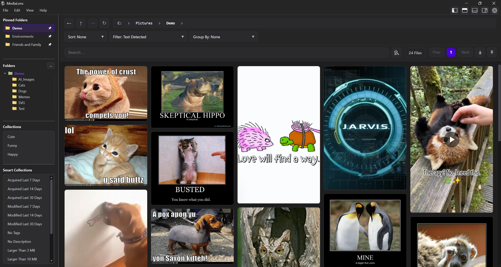
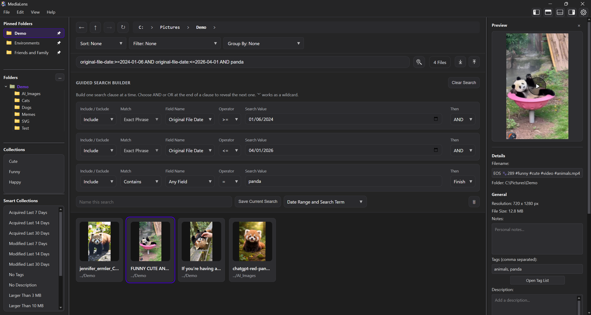
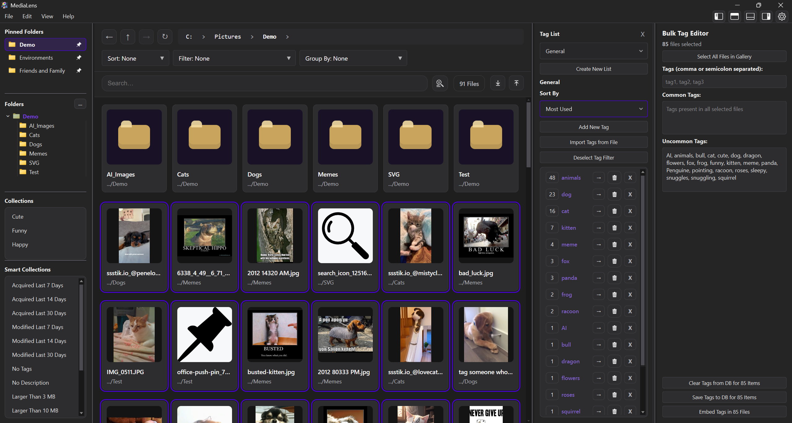

Scan a folder
MediaLens groups duplicates and visual variants across the active library scope.
Windows desktop app for large visual libraries
Clean up duplicate and similar images with confidence, inspect every difference, and keep browsing, tagging, and organizing after the cleanup is done.
The difference is visible
MediaLens groups exact duplicates and close variants, then explains what changed so cleanup decisions are reviewable instead of risky.

Cleanup flow
MediaLens groups duplicates and visual variants across the active library scope.
Cards call out meaningful differences like crop, color, file size, format, and metadata richness.
Use rules, manual choices, metadata merge, retention, or per-group decisions before files move.
Beyond duplicate cleanup
After cleanup, MediaLens becomes a fast media command center for search, tags, AI metadata, dates, collections, and high-volume browsing.


Product depth
Switch between the workspaces that matter most: duplicate review, comparison, tagging, search, metadata, and timeline browsing.

Designed for
Get MediaLens
All dependencies are included. Install, choose a folder, and start reviewing your media library with full control.